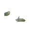
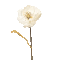
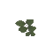
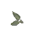
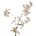
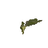

my little garden of curiosity
꒰ what is this ? ꒱
knowledge gardening is the gentle practice of planting little seeds of understanding, tending them with wonder, giving them time to grow and bloom into wisdom. it is gathering ideas like wildflowers, watering them by pondering and reflecting, patiently watching the garden become richer with every season of life.
i am planting tiny sprouts of curiosity here, one idea at a time.
this is my text!. this is my text!.this is my text!. this is my text!.this is my text!. this is my text!.this is my text!. this is my text!.


this is my text!. this is my text!.this is my text!. this is my text!.this is my text!. this is my text!.this is my text!. this is my text!.



this is my text!. this is my text!.this is my text!. this is my text!.this is my text!. this is my text!.this is my text!. this is my text!.

this is my text!. this is my text!.this is my text!. this is my text!.this is my text!. this is my text!.this is my text!. this is my text!.
this is my text!. this is my text!.this is my text!. this is my text!.this is my text!. this is my text!.this is my text!. this is my text!.
